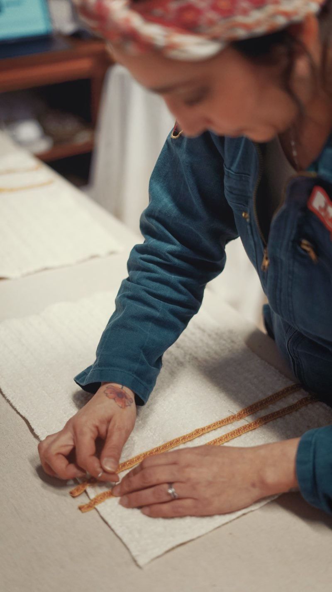
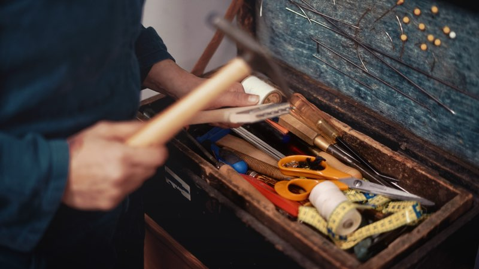

Notre histoire
Tout a commencé avec une passion pour la couture. Dès mon plus jeune âge, j'ai été fascinée par la création et le design textile.

Après une formation initiale, j'ai approfondi mes compétences auprès de maîtres artisans et de maisons reconnues.
Mon oncle, mon mentor, maître tapissier, est bien plus qu'un artisan talentueux. Il est un guide précieux, un modèle d'intégrité et de passion.
Attirée par l'histoire et l'artisanat qui entourent la tapisserie, j'ai suivi une formation spécialisée, où j'ai appris les techniques traditionnelles comme les méthodes contemporaines.

Un siège à refaire, des rideaux à créer ?
Le devis est gratuit, la réponse arrive sous 48 h ouvrées.